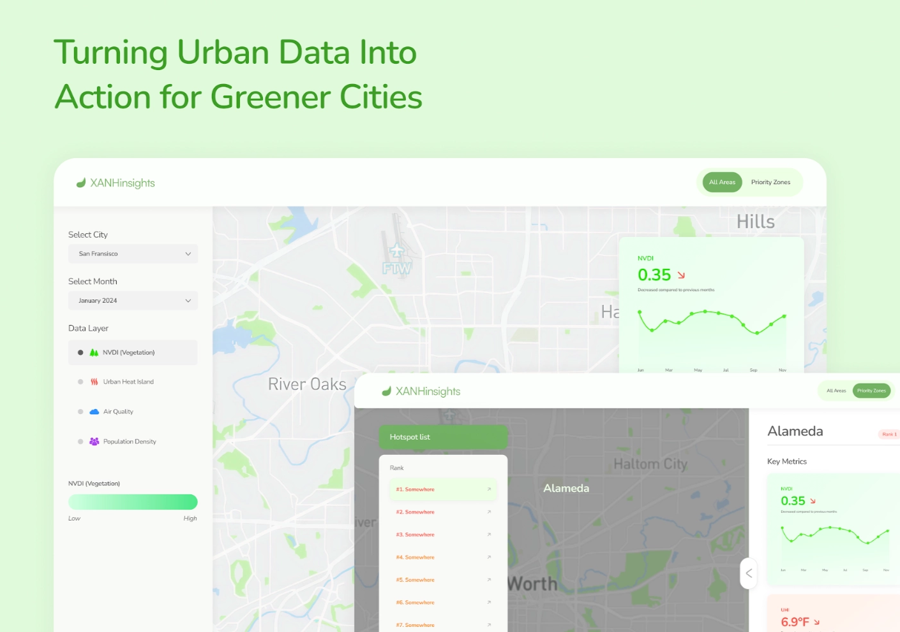
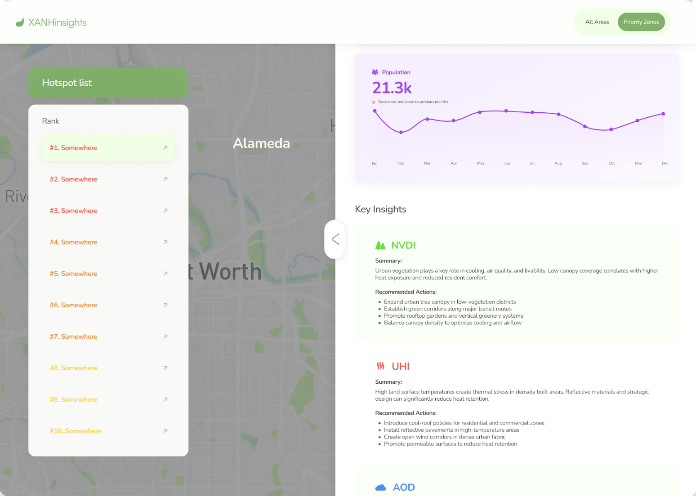
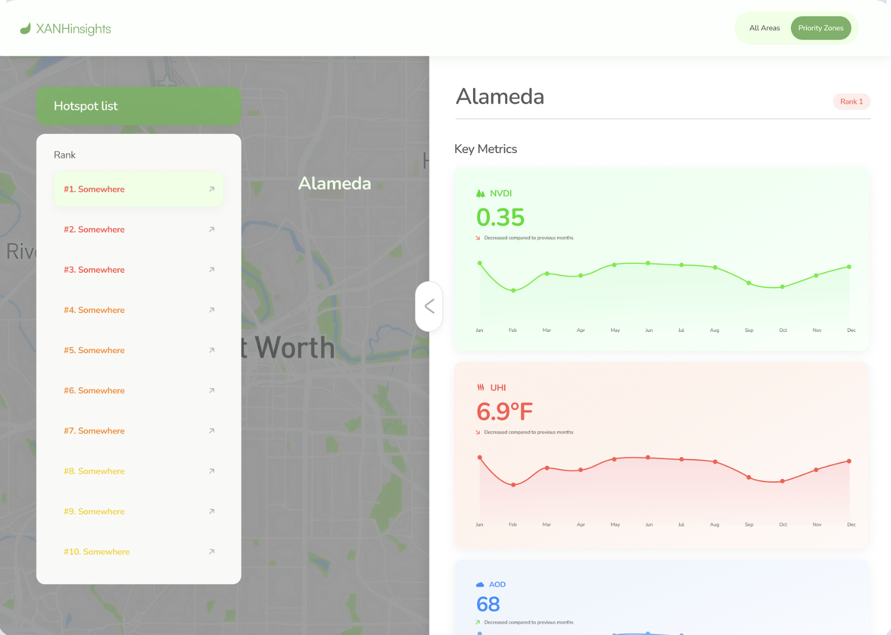
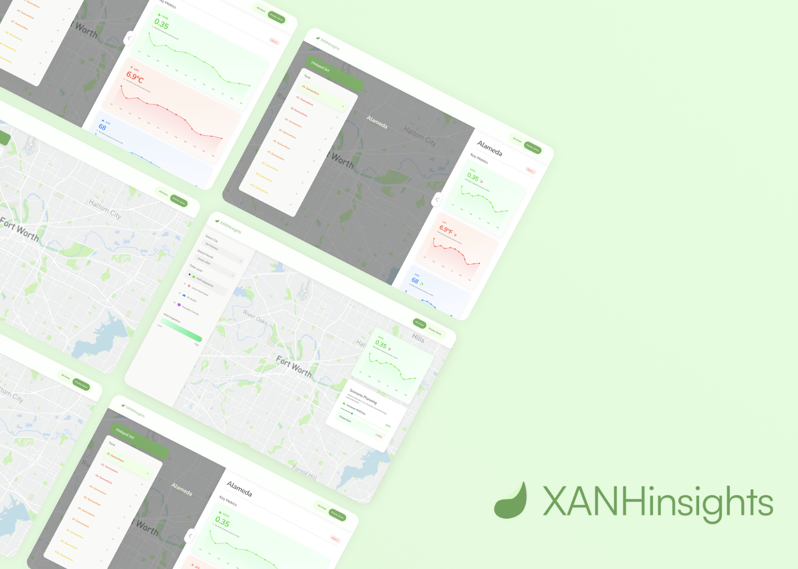
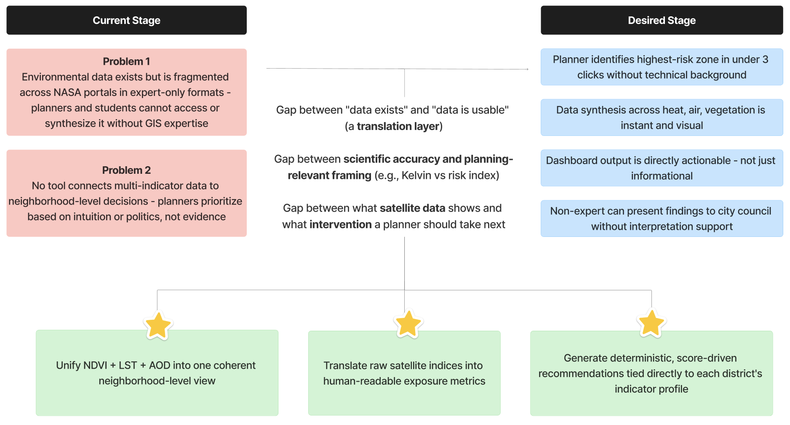

Every summer, the Bay Area sky turns orange. Heat builds in neighborhoods that already have the least green cover and worst air. City planners know something needs to change — but the data that could tell them exactly where to act first is buried across a dozen complex satellite portals, in formats only satellite scientists can read.
XANHinsights transforms raw NASA Earth observation data into a clear, actionable decision-support dashboard for urban planners.




"Urban planners cannot efficiently identify which neighborhoods need green intervention most — because heat, air quality, and vegetation data exist in separate, inaccessible, non-synthesized sources."

| Tool | Who it serves | What it does | Critical gap |
|---|---|---|---|
| Google Earth Engine | Satellite researchers, data scientists | Full-power geospatial analysis platform | Requires coding expertise. No planning workflow. No recommendations. |
| NASA Worldview / Earthdata | Scientists, researchers | Raw satellite data visualization and download | Data portal only. No synthesis. No actionability. |
| EPA EJScreen | Policy analysts, EPA staff | Environmental justice screening at census level | US-wide but coarse. No scenario simulation. Not vegetation-focused. |
| ArcGIS / QGIS | GIS professionals | Full geospatial analysis and mapping | Paid and expert-only. No built-in multi-indicator priority scoring. |
| XANHinsights ✦ | Urban planners, NGOs, students | Unified multi-indicator dashboard + priority score + scenario sim | Built specifically for non-expert decision-making. Free. Open NASA data. |
| Layer | Tool | Role |
|---|---|---|
| Frontend | React + TypeScript + CSS + Mapbox GL JS | Interactive map, choropleth layers, district click interactions |
| Backend | FastAPI (Python) | REST APIs, entropy weighting engine, Priority Score computation |
| Data processing | Python + Google Earth Engine | Raster extraction, spatial joins, index normalization, CSV export |
| UI/UX design | Figma | Hi-fi wireframes, component design, prototype |
| Version control | GitHub | Codebase management |
| Project coord. | Notion + Google Sheet | Task tracking, timeline, documentation |
| Dataset | Provider | What it contributes |
|---|---|---|
| MODIS MCD19A2 | NASA GES DISC | Aerosol Optical Depth (AOD) |
| MODIS Land Surface Temp | NASA Earthdata | Urban Heat Island (LST) |
| MODIS NDVI | NASA Earthdata | Vegetation coverage index |
| GPWv4 / SEDAC | NASA CIESIN | Population density |
| Copernicus GHSL | European Commission | Built-up area and urban extent |
| TIGER/Line 2023 | US Census Bureau | Bay Area neighborhood boundaries |
No off-the-shelf library handles this specific combination. The analytical engine has three components working together to produce a single, statistically defensible Priority Score per district.
| Raw Concept | Product Name | Why |
|---|---|---|
| NDVI (-1 to 1) | Vegetation Index | Spectral ratio means nothing to a planner |
| LST in Kelvin | Urban Heat Island (UHI) | Maps to a concept planners already know |
| AOD 0–1 proxy | PM2.5 / Air Exposure Index | The term residents and planners already use |
| Raw density per km² | Population Exposure | Frames density as a risk multiplier, not a count |
| Entropy+PCA composite | Priority Score | Single number replaces four confusing dimensions |
Our engineering team spent over 30 of 48 hours on data alone. Here is what that actually involved.
"When I encounter a neighborhood environmental problem and need to act on it, help me quickly understand which areas need intervention most — and give me credible evidence and a clear path forward."
| Use Case | User Story | Feature |
|---|---|---|
| UC1 — Find top priority zone | "When preparing a proposal, I want to see which district has the worst combined profile, so I can justify where to invest first." | Priority Zones mode + ranked hotspot list |
| UC1b | "When comparing zones, I want to see why each ranked where it did, so I can explain it to city officials." | Priority Score breakdown panel |
| UC2 — Explore neighborhood | "When I click a neighborhood, I want to see its heat, air, and vegetation metrics together, so I understand its full environmental risk." | Right-panel analytics + multi-indicator view |
| UC2b | "When viewing a district, I want to see its trend over months, so I can assess if it's improving or worsening." | Time-series line chart |
| UC3 — Simulate intervention | "When choosing between interventions, I want to simulate NDVI increase and see projected temperature + air quality changes, so I can prioritize the highest-impact action." | Scenario Planning slider |
| UC3b | "When presenting to residents, I want visuals simple enough for non-experts, so the community understands the data." | Color-coded map + plain-language summaries |
| Decision | Chosen | Rejected | Tradeoff accepted |
|---|---|---|---|
| Scoring model | Hybrid Entropy + PCA | Simple average of indicators | Higher technical complexity, but eliminates bias from correlated indicators. Defensible to judges. |
| Mode design | Two modes: All Areas + Priority Zones | Single unified view | Adds navigation complexity, gains user-context match. Planner uses Priority Zones. Student uses All Areas. |
| Output type | Actionable recommendations + impact estimates | Data-only visualization | Required more product thinking + content work, but closes the "so what" gap for the user. |
| Data scope | 3 indicators (NDVI, LST, AOD) | Add population density + zoning | Reduced data pipeline complexity. Population density added later as overlay, not weighted in score. |
| Priority | Feature | User story it unlocks | Persona |
|---|---|---|---|
| Now | Socioeconomic overlay (income, demographics) | "Show me if heat risk concentrates in low-income neighborhoods" | Planner, NGO |
| Now | Context-aware recommendations (budget / land / time filters) | "Given I have $50k and 6 months, what should I do in this district first" | Planner |
| Next | Historical trend comparison (year-over-year) | "Is this neighborhood getting worse or better over time" | Researcher, Planner |
| Next | PDF / slide export of district profile | "I need a one-page brief for city council by Friday" | Planner |
| Next | Side-by-side district comparison | "Show me Industrial East vs Port District across all indicators" | Researcher |
| Later | Multi-city support | "Run the same analysis for Oakland, LA, and Houston" | Researcher, Policy |
| Later | Open data API | "Integrate XANHinsights data into our city planning platform" | Developer, Gov |
XANHinsights started as a response to a hackathon prompt. It became proof of something more specific: the hardest part of making satellite data useful isn't just the satellite data.
The real question came after: how do we make this mean something to someone who has never opened a NASA portal in their life?
That translation — from spectral index to planning decision, from Kelvin to action — is where the actual product lives. It turns out this gap exists in every city that has environmental data but no clear path from data to decision.